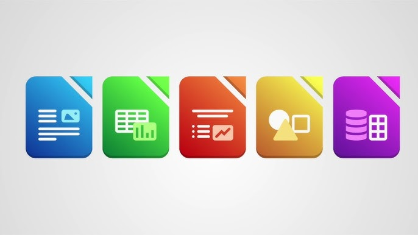

Aqui se va a poder ver proyectos que se ha realizado durante el curso de la FP de Microinformatica y Redes. Los proyectos que voya mostrar son de Aplicaciones Web, Empresariales, Redes, Sistemas Operativos, Montaje, Aplicaciones Ofimaticas
Aplicaciones Web
Proyecto 1: El primer trabajo consistia en hacer una tabla
Proyecto 2: El segundo proyecto consiste en hacer un portfolio del GRado que estamos haciendo explicando todo los progresos que hemos tenido durante el curso
Proyecto 3: El tercer proyecto consistia en hacer una pagina web del tema que queriamos con el CSS Basico aprendido en clase y eniamos que cumplir unos requisitos
Empresariales
El primer trabajo realizado en empresariales es crear un curriculum. Si le damos al botón se descargaria mi curriculum
Redes
Unos de los proyectos que hemos tenido es trabajar con el packet tracer y hemos tenidos que crear y conectar: routers, switches, firewalls, etc
Sistemas Operativos
En ese modulo hemos trabajado con el virtual box que ayuda trabajar con otro sistemas y hemos tenido que instalar y configurar sistemas operativos
Montaje
En motaje hemos tendio que aprender primero los componente que tiene un pc y saber su función y despues fuimos al taller para poder trabajar con los componentes y ver lo que contiene un pc y como colocarla perfectamente
Aplicaciones Ofimaticas

En Aplicaciones Ofimaticas hemos trabajado con Word, PowerPoint y Excel. Hemos tenido practicas de los tres tipos nombrado anteriormente y hemos teniso que aprender primero donde esta la función y saber para que sirve